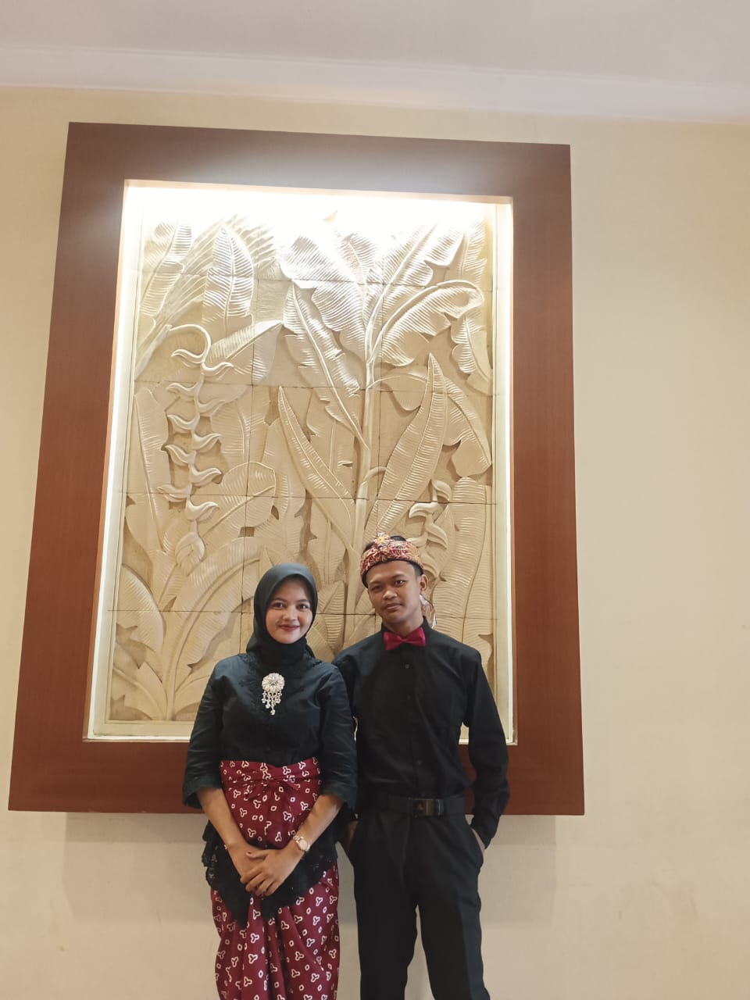

Kepada Yth.
Bapak/Ibu/Saudara/i
"Dan di antara tanda-tanda (kebesaran)-Nya ialah Dia menciptakan pasangan-pasangan untukmu dari jenismu sendiri, agar kamu cenderung dan merasa tenteram kepadanya, dan Dia menjadikan di antaramu rasa kasih dan sayang."
— QS. Ar-Rum: 21
Kami Mengundang Anda dalam Acara
The Wedding of

Yusuf & Anjeli
Yusuf
Putra dari Bapak H. Abdul Gani
& Ibu Hj. Siti Zulaiha
Anjeli
Putri dari Bapak Rahmat Hidayat
& Ibu Diana Puspitasari
Minggu,20 Januari 2030
📲 Kirim via WhatsApp
Detail Acara Bahagia
🕌 Akad Nikah
**Hari/Tanggal:** Minggu, 20 Januari 2025
**Pukul:** 09.00 WIB - Selesai
**Lokasi:** Gedung pertemuan Taman Perwacy, Bandung
🥂 Resepsi Pernikahan
**Hari/Tanggal:** Minggu, 20 Januari 2025
**Pukul:** 11.00 – 15.00 WIB
**Lokasi:** Gedung pertemuan Taman Perwacy, Bandung
Merupakan suatu kehormatan dan kebahagiaan bagi kami apabila Bapak/Ibu/Saudara/i berkenan hadir dan memberikan doa restu.
Atas kehadiran dan doa restunya, kami ucapkan terima kasih.